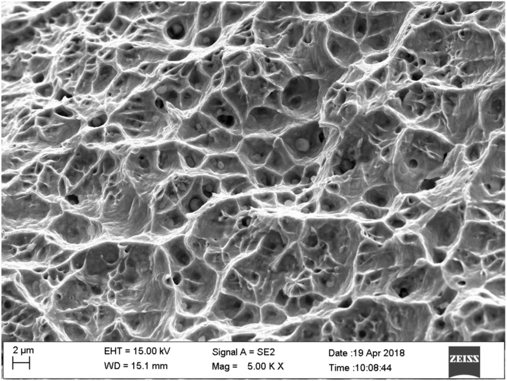

Live project
Materials Intelligence
An agentic AI assistant for materials engineers. It classifies SEM fracture images, retrieves ISO/DIN standards, and estimates fracture risk from plant motor-load data on 4Cr13 axle steel.

- SEM ductile / brittle classification
- ISO 6507 and related standards via RAG
- Motor session context for winding temperature and shaft load
Built by Shyam Sunder Chiliveri. Hosted on Oracle Cloud Always Free with HTTPS.